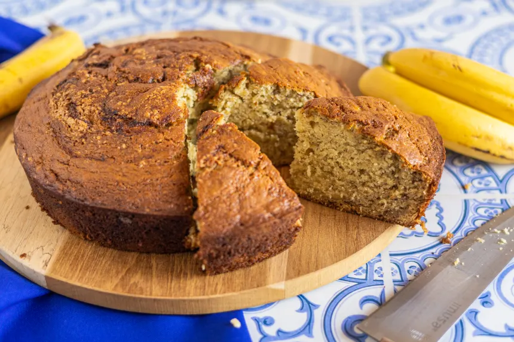

Banana Cake

Mom L's Banana Cake
Easy traditional banana cake recipe
This is the recipe for my mother-in-law's much-loved banana cake. It's a no-fuss recipe that yields a delicious cake that will be enjoyed by all.
Ingredients
- 2 and 1/2 cups flour
- 1 teaspoon baking soda
- 1 teaspoon baking powder
- 1 teaspoon salt
- 2/3 cup butter
- 2 teaspoons lemon juice
- 1 and 1/2 cups of sugar
- 1 cup mashed ripe bananas
- 2 eggs
- 1 teaspoon vanilla
- 2/3 cup whole milk
Steps
- Set oven at 350 degrees.
- Combine milk and lemon juice. Set aside.
- Combine flour, baking soda, baking powder and salt. Set aside.
- Cream butter and sugar. Add banana, beaten eggs and vanilla (2 minutes with electric beater). Alternate mixing in flour mixture and sour milk, beating well after each addition. Beat entire mixture another 2 minutes.
- Grease and flour two 9-inch cake pans.
- Pour cake mixture into pans in equal amounts.
- Bake for 35 minutes or until done. Cool pans for 10 minutes and then turn out on cake racks.
- Frost when completely cool with butter cream frosting.